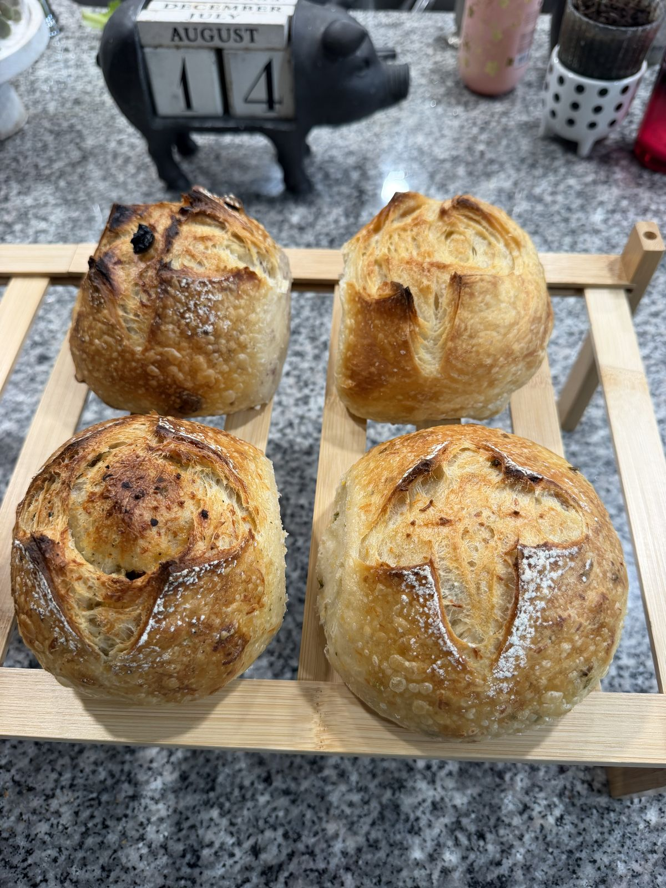

From one kitchen starter to a working farm bakery
Forest Haven Farm started the way most good sourdough does: slowly, with a lot of patience and a little stubbornness.
A family farm, a kitchen starter, and a lot of trial and error
Forest Haven Farm is a small, family-run farm and bakery. What started as one home baker learning to keep a wild sourdough starter alive turned into weekly bakes for neighbors, then a stand at the local farmers market, and eventually a wood-fired oven built right on the property.
We still measure success the same way we did in year one: does the bread taste like it was made with care? Everything else — the farm stand, the market table, the Instagram page — grew up around that one question.

From Our KitchenHow we got here
A starter is born
It began with a jar of flour and water on a kitchen counter and a lot of failed loaves. Within a few months, that same starter was feeding our whole family — it's still the one we bake with today.
First farmers market stand
We showed up to the Sylvan Ridge farmers market with twelve loaves and a folding table. They sold out in under an hour.
We moved the bakery to the farm
A wood-fired oven went up behind the barn, and baking day became a weekly rhythm tied to the seasons and what was growing in the fields around it.
Community-supported bakery launched
Neighbors could finally reserve a standing weekly loaf, and Forest Haven Farm started feeling less like a side project and more like a real bakery.
Real Sourdough Bread finds its community online
Our Instagram, @foresthavenfarm, became a weekly window into the starter, the fields, and the oven — and brought a whole new community of bread lovers to the farm stand.
Online ordering opens
This site launches so anyone can browse the menu, learn the process, and reserve a loaf ahead of baking day — no more guessing if we sold out.
The values behind every loaf
Grown, Not Just Sourced
We grow and mill as much of our own grain as the farm allows, and buy the rest from growers we know by name.
Slow On Purpose
Long fermentation isn't a trend for us — it's the only way we know how to get real flavor and a bread that's easier to digest.
Baked for Neighbors
We bake what our community can eat that week. No freezer stock, no shipping pallets — just fresh bread for people nearby.